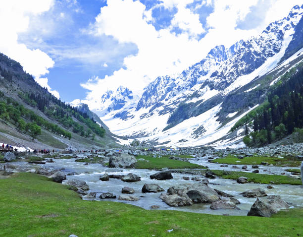

01
Srinagar
The summer capital — famous for iconic Dal Lake shikara rides, traditional carved houseboats, Mughal gardens, and floating vegetable markets.

Discover paradise on Earth — serene Dal Lake shikaras, snow-draped alpine ski slopes of Gulmarg, pine-fringed Lidder valleys of Pahalgam, and rich Wazwan culinary traditions.
Explore Jammu & Kashmir ↓Jammu and Kashmir is a crown jewel of the Indian subcontinent, celebrated worldwide for its picturesque valleys, snow-crowned Pir Panjal ranges, and tranquil blue water bodies.
From staying in carved cedar houseboats on Srinagar's Dal Lake to skiing down the pristine slopes of Gulmarg and trekking through the pine forests of Pahalgam, Jammu & Kashmir offers an immortal Himalayan experience.
Legendary lakes, meadow ski resorts, and alpine valleys across Jammu & Kashmir.
The summer capital — famous for iconic Dal Lake shikara rides, traditional carved houseboats, Mughal gardens, and floating vegetable markets.

The Meadow of Flowers — a premier Himalayan ski resort featuring world-class winter sports and the world's second-highest operating cable car (Gondola).

The Valley of Shepherds — a tranquil alpine retreat along the roaring Lidder River, serving as the gateway to the sacred Amarnath Yatra.

The City of Temples — renowned for the sacred hilltop shrine of Vaishno Devi, ancient Dogra palaces, and historic riverside fortresses.
Kashmiri cuisine is an aromatic symphony of whole spices like fennel, ginger, and saffron, while Jammu specialties celebrate rustic Dogra dairy and lentil preparations.

World-renowned intricate Pashmina shawls, hand-knotted silk carpets, walnut wood carving, and colorful papier-mâché artifacts.
Soulful Sufi music performances (Sufiana Kalam), Rouf folk dance movements by women, and traditional Santoor recitals.
Vibrant cultural celebrations including Shivratri (Herath), Navroz, and Urs festivals reflecting deep secular harmony.
Traditional loose woolen robes (Pheron) worn with Kangri firepots, symbolizing centuries of resilient adaptation to Himalayan winters.
Discover all states, union territories, local food specialties, and centuries of living traditions.
← Back to Union Territories